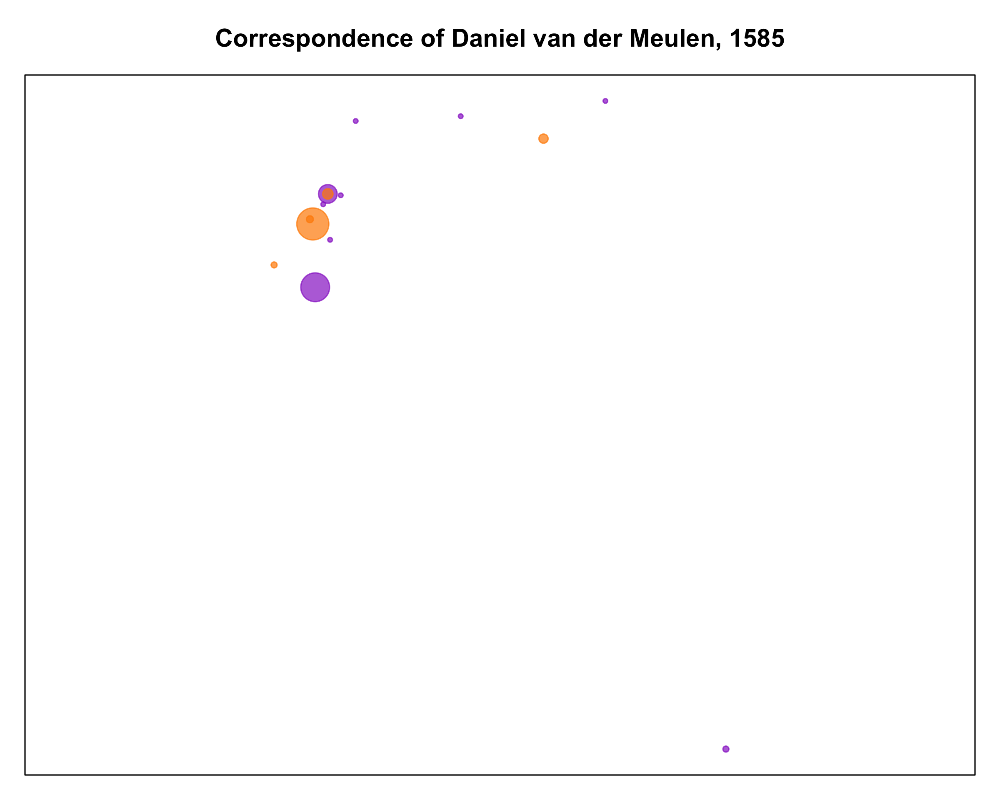
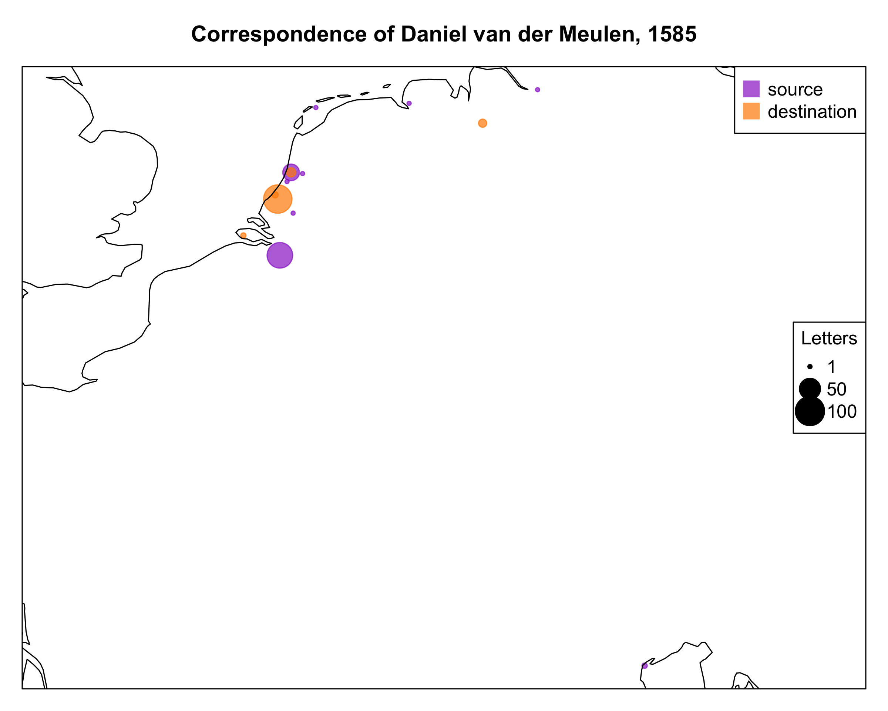
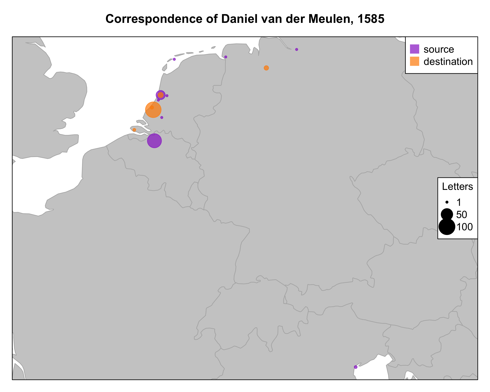
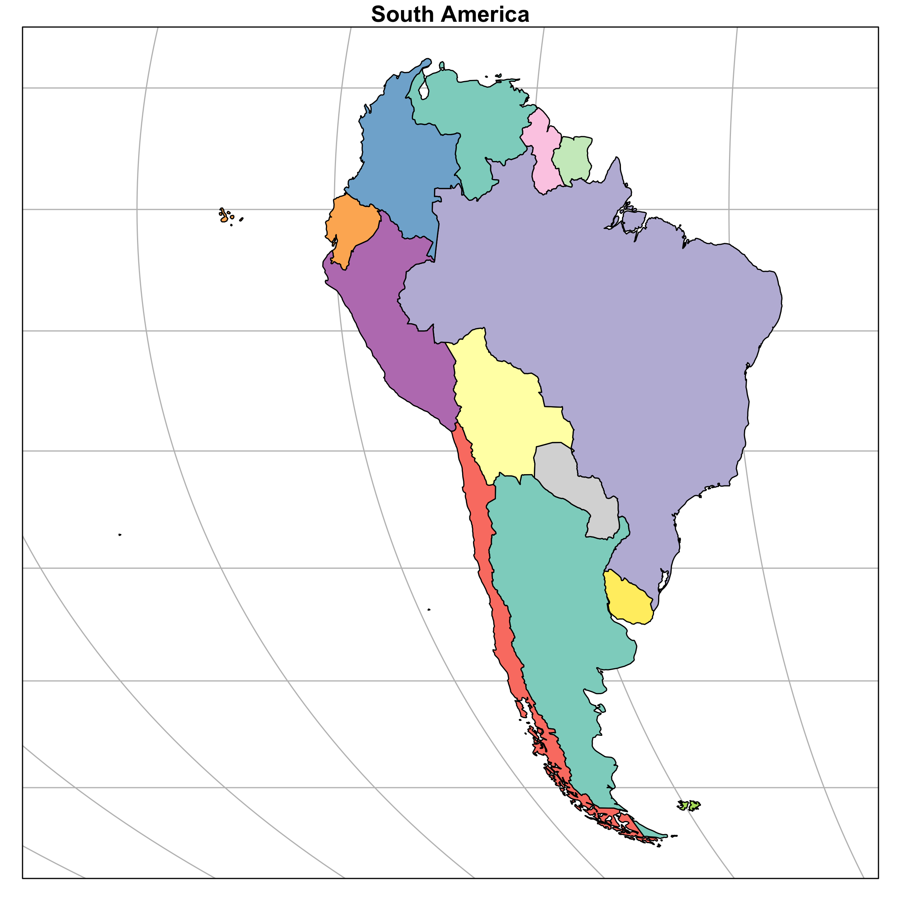
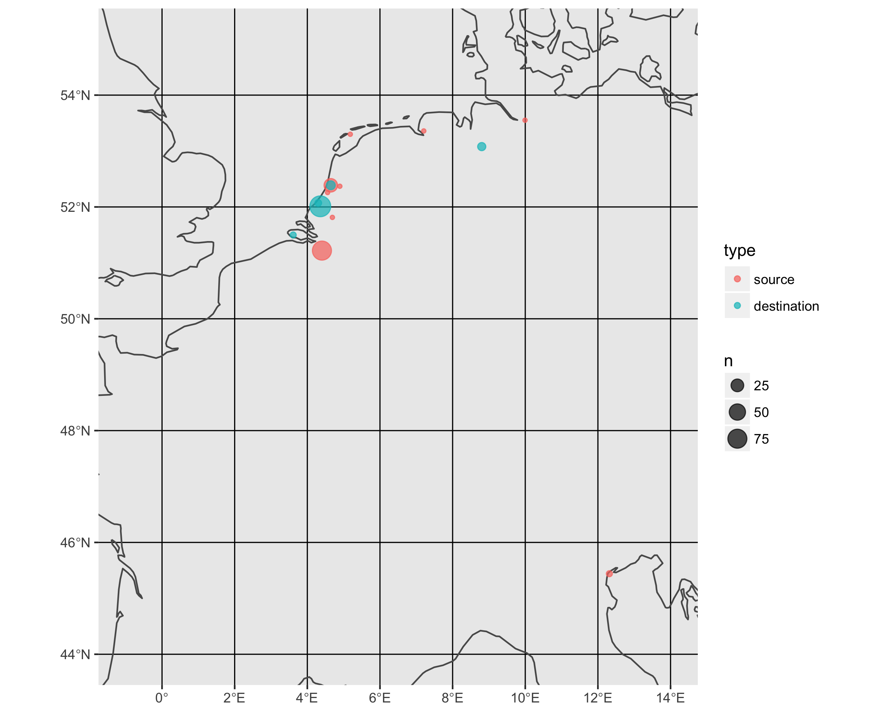
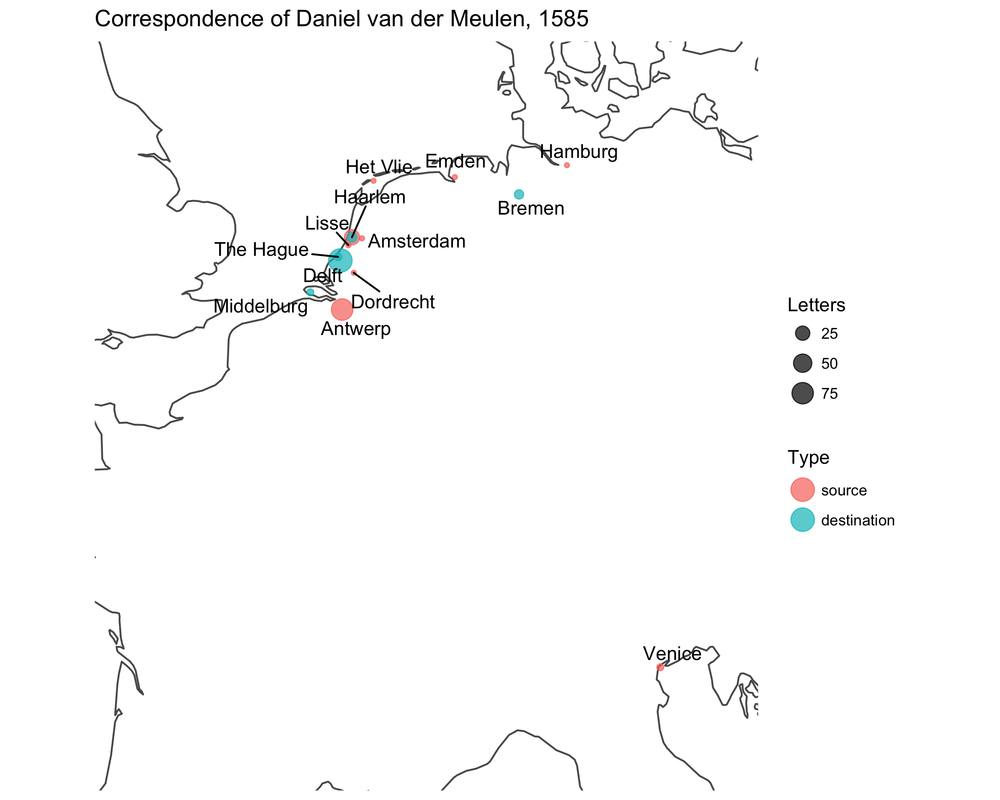
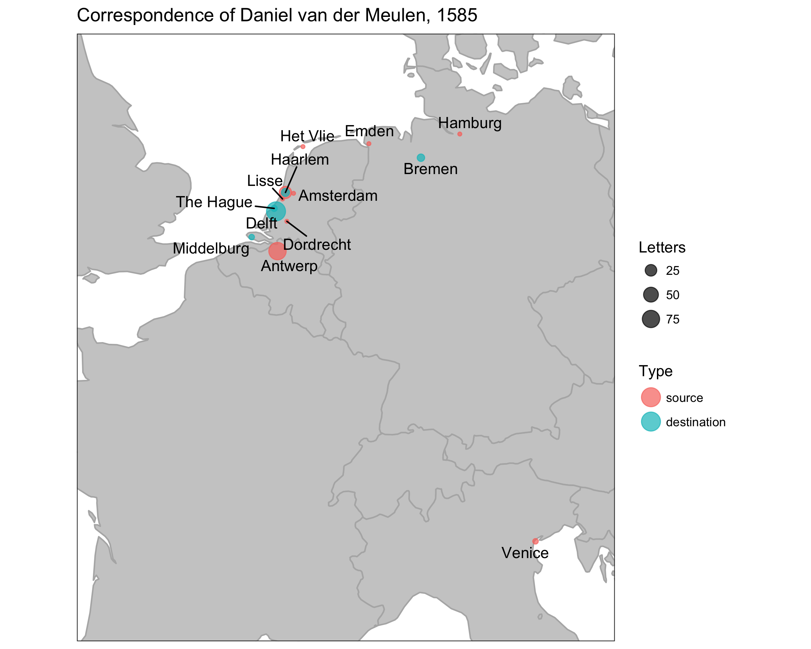

The geographic visualization of data makes up one of the major branches of the Digital Humanities toolkit. There are a plethora of tools that can visualize geographic information from full-scale GIS applications such as ArcGIS and QGIS to web-based tools like Google maps to any number of programing languages. There are advantages and disadvantages to these different types of tools. Using a command-line interface has a steep learning curve, but it has the benefit of enabling approaches to analysis and visualization that are customizable, transparent, and reproducible.1 My own interest in coding and R began with my desire to dip my toes into geographic information systems (GIS) and create maps of an early modern correspondence network. The goal of this post is to introduce the basic landscape of working with spatial data in R from the perspective of a non-specialist. Since the early 2000s, an active community of R developers has built a wide variety of packages to enable R to interface with geographic data. The extent of the geographic capabilities of R is readily apparent from the many packages listed in the CRAN task view for spatial data.2
In my previous post on geocoding with R I showed the use of the ggmap package to geocode data and create maps using the ggplot2 system. This post will build off of the location data obtained there to introduce the two main R packages that have standardized the use of spatial data in R. Thesp and sf packages use different methodologies for integrating spatial data into R. The sp package introduced a coherent set of classes and methods for handling spatial data in 2005.3 The package remains the backbone of many packages that provide GIS capabilities in R. The sf package implements the simple features open standard for the representation of geographic vector data in R. The package first appeared on CRAN at the end of 2016 and is under very active development. The sf package is meant to supersede sp, implementing ways to store spatial data in R that integrate with the tidyverse workflow of the packages developed by Hadley Wickham and others.
There are a number of good resources on working with spatial data in R. The best sources for information about the sp and sf packages that I have found are Roger Bivand, Edzer Pebesma, and Virgilio Gómez-Rubio, Applied Spatial Data Analysis with R (2013) and the working book Robin Lovelace, Jakub Nowosad, Jannes Muenchow, Geocomputation with R, which concentrate on sp and sf respectively. The vignettes for sf are also very helpful. The perspective that I adopt in this post is slightly different from these resources. In addition to more explicitly comparing sp and sf, this post approaches the two packages from the starting point of working with geocoded data with longitude and latitude values that must be transformed into spatial data. It takes the point of view of someone getting into GIS and does not assume that you are working with data that is already in a spatial format. In other words, this post provides information that I wish I knew as I learned to work with spatial data in R. Therefore, I begin the post with a general overview of spatial data and how sp and sf implement the representation of spatial data in R. The second half of the post uses an example of mapping the locations of letters sent to a Dutch merchant in 1585 to show how to create, work with, and plot sp and sf objects. I highlight the differences between the two packages and ultimately discuss some reasons why the R spatial community is moving towards the use of the sf package.
Spatial data and coordinate reference systems
The distinguishing feature of spatial data is that it represents actual locations on Earth. To represent the geographic placement of an object you need two pieces of information: the coordinates of the object and a system of reference for how the coordinates relate to a physical location on Earth. The non-spherical shape of the Earth, which bulges at the equator, complicates the creation and use of a coordinate reference system or CRS and plethora of complex models have been created in attempts to accurately represent the Earth’s surface. A CRS consists of one such ellipsoid or geometric model of the shape of the Earth and a datum, which identifies the origin and orientation of the coordinate axes on the ellipsoid, as well as the units of measurement.4 There are two types of CRSs: geographic and projected. Geographic reference systems represent points on an globe, using units of degrees longitude and latitude that correspond to angles measured from the center of the Earth as calculated using the given ellipsoid. A projected reference system uses a geometric model to project a 3-dimensional ellipsoid onto a 2-dimensional plane. A projection is necessary to create any 2-dimensional map, but it results in the distortion of aspects of the Earth’s surface such as area, direction, distance, and shape. Despite the necessary distortion, projected reference systems are useful for geographic analysis, because they use linear units of measurement such as meters instead of degrees.5
Between the variety of ellipsoidal models, the vast array of global and local datums, and the various kinds of projections, there are innumerable CRSs to choose from. The sp and sf packages implement two different ways to identify a specific CRS and to transform objects from one CRS to another: the PROJ library and EPSG codes. The PROJ library uses an identification system of +parameter=value to define a CRS. The library uses a wide range of parameters to specify a CRS, but the most important are +proj and +datum for the projection and datum to be used. The PROJ parameters provides the basis for how sp and sf identify CRSs, but CRSs can also be identified through EPSG codes.6 The EPSG library supplies codes for well-known CRSs, and thus provides an easier method to identify a subset of the CRSs available through the PROJ library. You can access a data frame of over 5,000 EPSG codes available in R through the rgdal package with the command rgdal::make_EPSG(). If you plan to deal with spatial data on a regular basis it is probably worth being familiar with widely used EPSG code such as 4326, which is geographic reference system that uses units of longitude and latitude on the World Geodetic System 1984 (WGS84) ellipsoid. Two useful resources for looking up and obtaining information about specific EPSG codes are EPSG.io and SpatialReference.org.
Spatial data with a defined CRS can represent either vector or raster data. Vector data is based on points — which can be connected to form lines and polygons — that are located within a coordinate reference system. Raster data, on the other hand, consists of values within a grid system. For example, a road map is a vector data and a map using satellite imagery is raster data made up of pixels on a grid. sp has capabilities to work with both vector and raster data, while sf and the simple features standard on which it is based only deals with vector data. This post will only discuss vector data, which is more widely used in the Humanities and Social Sciences.
Overview of the sp and sf packages
The complexity that comes with the identification and translation between the thousands of different coordinate reference systems makes it impossible for standard R objects such as data frames to properly represent spatial data. In addition, the best way to represent coordinates — in one or two columns — and the representation of more complex objects such as lines and polygons create problems for how to store spatial data. These shortcomings can be seen with geocoded data that contains longitude and latitude values in a data frame like that I created in geocoding with R. Most geocoded data created through Google Maps or other geocoding sites provides coordinates in longitude and latitude values using the WGS84 ellipsoid and thus contains a CRS equivalent to the PROJ argument +proj=longlat +datum=WGS84 or EPSG 4326. However, this information about the CRS is implicit and not contained anywhere within the data frame itself.
Due to the inadequacies of normal data frame objects to represent the variety of features of spatial data, the sp and sf packages both define their own classes of objects to store spatial data. From a beginner’s perspective, the main differences between the sp and sf packages derive from the manner by which sp and sf classes store information about CRS, distinguish between points, lines, and polygons, and how they connect this spatial data to non-spatial data stored in a data frame.
The sp package uses what are known as S4 classes in R to represent spatial data. S4 objects are made up of slots that store different types of well-defined data. The slots can be accessed with the @ symbol in the form of object@slot. The foundational sp class is the Spatial class, which has ten subclasses differentiated by the slots they contain. To get a better idea of what this all looks like, we can use the getClass() function, but first we have to load the sp package.7
# Load the sp package
library(sp)
# Spatial classes
getClass("Spatial")## Class "Spatial" [package "sp"]
##
## Slots:
##
## Name: bbox proj4string
## Class: matrix CRS
##
## Known Subclasses:
## Class "SpatialPoints", directly
## Class "SpatialMultiPoints", directly
## Class "SpatialGrid", directly
## Class "SpatialLines", directly
## Class "SpatialPolygons", directly
## Class "SpatialPointsDataFrame", by class "SpatialPoints", distance 2
## Class "SpatialPixels", by class "SpatialPoints", distance 2
## Class "SpatialMultiPointsDataFrame", by class "SpatialMultiPoints", distance 2
## Class "SpatialGridDataFrame", by class "SpatialGrid", distance 2
## Class "SpatialLinesDataFrame", by class "SpatialLines", distance 2
## Class "SpatialPixelsDataFrame", by class "SpatialPoints", distance 3
## Class "SpatialPolygonsDataFrame", by class "SpatialPolygons", distance 2The output lists the different Spatial classes and shows that the basis for all Spatial objects is the bbox and proj4string slots. The proj4string provides the CRS for an object through a PROJ definition, while the bbox slot provides a matrix of the minimum and maximum coordinates for the object. The Spatial subclasses add slots to the foundational slots of bbox and proj4string for the type of geometric data — points, lines, polygons, and grid for raster — and whether the object contains attribute data in the form of a data frame. We can see this from the slots in the SpatialPoints and the SpatialPointsDataFrame classes.
# slots for SpatialPoints class
slotNames("SpatialPoints")## [1] "coords" "bbox" "proj4string"# slots for SpatialPointsDataFrame
slotNames("SpatialPointsDataFrame")## [1] "data" "coords.nrs" "coords" "bbox" "proj4string"The SpatialPoints class contains a coords slot to store the point coordinates. The SpatialPointsDataFrame class adds a data slot that enables points to be associated with attribute data in a data frame. The non-spatial data of a Spatial*DataFrame object can be accessed with @data. However, these S4-style classes do not fit within the definition of tidy data and cannot be manipulated using the dplyr methods I have discussed in previous posts. Instead, all manipulation of the @data slot is done with base R commands. sp objects also cannot be plotted with ggplot2, but need to use the base or trellis plotting systems, though it is possible to force them into a compatible form with the broom package.
In contrast to the Spatial class, the sf class — yes, the package and class have the same name — is an extension of data frames. Essentially, sf objects can be treated as data frames that also contain spatial data, as opposed to spatial data that may or may not also contain data frames. This enables sf objects to fit within the tidyverse workflow, making it possible to manipulate them with dplyr commands. The tidy nature of sf objects also means that they can can be plotted with ggplot2, though currently this capability is only possible with the development version of ggplot2.
sf objects consist of rows of features, hence the name simple features, which have both non-spatial and spatial forms of data. The spatial data of an sf object is contained in a special geometry column that is of class sfc. The geometry column contains the same basic types of spatial data as the slots in Spatial objects: the CRS, coordinates, and type of geometric object. The sfc class has seven subclasses to denote the types of geometric objects within the geometry column, which are derived from the simple features standard. The possible geometric objects are point, linestring, polygon, multipoint, multilinestring, multipolygon, and geometrycollection for any combination of the other types.8
With this basic introduction to spatial data and the sp and sf packages out of the way, the remainder of the post will demonstrate the creation and visualization of Spatial and sf objects by creating maps of the letters sent to Daniel van der Meulen in 1585. For this example, I want to map the total number of letters sent from and received in each location as I did previously with ggamp. This will involve working with spatial data in the form of points, lines, and polygons. The points will represent the sources and destinations of the letters Daniel received and will be plotted on two different kinds of background maps using the rnaturalearth package to access coastal (lines) and country (polygons) world maps from the Natural Earth open-source repository of maps. In the process I will show how to make base R maps with sp and ggplot2 plots with sf and development version of ggplot2.
Preparing the data
The first thing that we need to do is get information about the number of letters sent from and received in each city and join this non-spatial data with the longitude and latitude information that was created in the geocoding with R post. This will provide the necessary components to create spatial points object in both sp and sf. You can find the data and the R script that goes along with this example on GitHub. Let’s start by loading the necessary packages and the two files containing data on the letters and the location of the cities in the letters data.
# Load the packages
library(tidyverse)
library(sp)
library(sf)
library(rnaturalearth)
# Load the data
letters <- read_csv("data/correspondence-data-1585.csv")
locations <- read_csv("data/locations.csv")The letters data frame contains 114 rows of letters with columns representing the writer, source, destination, and date of each letter. This example will only make use of the source and destination of the letters. The locations data frame contains columns for the name, longitude, and latitude of the 13 cities found in the letters data. There are a couple of ways that the data can be prepared, but in this case I want the data for the source and destination of the letters to be in a single data frame in order to minimize the objects that we will be dealing with in the post. The goal is to create a data frame with a column for the name of the city, the number of letters, and whether this information refers to letters sent or letters received. This can be done by separately finding the number of letters sent to each location and the number of letters received in each location and then joining the two data frames together.
We can get the number of letters sent from and received in each location by grouping the data by source or destination and using either count() or summarise(count = n()) to count the number of occurrences in the chosen grouping. This provides us with a count column, but we also want to structure the data frames for source and destination in the same way. Therefore, I rename the column containing the city information to “place.” Doing this removes information about whether the observation is a source or destination, and so I add in this data with add_column(), creating a “type” column. The last step in this pipeline is to remove the grouping from the data frames, as this is no longer useful information and could influence later manipulations.
# Letters per source
sources <- letters %>%
group_by(source) %>%
count() %>%
rename(place = source) %>%
add_column(type = "source") %>%
ungroup()
# Letters per destination
destinations <- letters %>%
group_by(destination) %>%
count() %>%
rename(place = destination) %>%
add_column(type = "destination") %>%
ungroup()At this point, you can use either rbind() or full_join() to bind the rows of sources and destinations together to create a letters_data data frame that contains the non-spatial data we will be using. In addition, we need to make a small but important change to the type of data in the “type” column to make it possible to differentiate between the sources and destinations in the base R plots created below. We can transform the “type” column to a factor using mutate() and as_factor() from the forcats package. This changes the way that R represents the data behind the scenes such that “source” and “destination” can be represented by numeric integers, which is necessary for working with colors in base R plots.9
# Bind the rows of the two data frames
# and change type column to factor
letters_data <- rbind(sources, destinations) %>%
mutate(type = as_factor(type))Let’s look at the result. We can see that the data is in the format that we are looking for and that the “type” column has been correctly transformed into factors.
# Print letters_data
letters_data## # A tibble: 14 x 3
## place n type
## <chr> <int> <fctr>
## 1 Amsterdam 1 source
## 2 Antwerp 76 source
## 3 Dordrecht 1 source
## 4 Emden 1 source
## 5 Haarlem 30 source
## 6 Hamburg 1 source
## 7 Het Vlie 1 source
## 8 Lisse 1 source
## 9 Venice 2 source
## 10 Bremen 6 destination
## 11 Delft 95 destination
## 12 Haarlem 8 destination
## 13 Middelburg 2 destination
## 14 The Hague 3 destinationHaving created the data for the number of letters sent from and received in each location, we now need to add the longitude and latitude of the cities. We can do this with a left join with the locations data frame, using the “place” column as the key to link the two data frames.
# Join letters_data to locations
geo_data <- left_join(letters_data, locations, by = "place")
# Print data with longitude and latitude columns
geo_data## # A tibble: 14 x 5
## place n type lon lat
## <chr> <int> <fctr> <dbl> <dbl>
## 1 Amsterdam 1 source 4.90 52.4
## 2 Antwerp 76 source 4.40 51.2
## 3 Dordrecht 1 source 4.69 51.8
## 4 Emden 1 source 7.21 53.4
## 5 Haarlem 30 source 4.65 52.4
## 6 Hamburg 1 source 9.99 53.6
## 7 Het Vlie 1 source 5.18 53.3
## 8 Lisse 1 source 4.56 52.3
## 9 Venice 2 source 12.3 45.4
## 10 Bremen 6 destination 8.80 53.1
## 11 Delft 95 destination 4.36 52.0
## 12 Haarlem 8 destination 4.65 52.4
## 13 Middelburg 2 destination 3.61 51.5
## 14 The Hague 3 destination 4.30 52.1The result is a data frame with 14 rows and 5 columns that give the number of letters sent from and received in the different locations and the longitude and latitude of those places. We now have all of the information that we need to transform this data into a spatial object with both sp and sf. We will then be able to map the points on base maps provided by the rnaturalearth package.
Spatial data with sp
The creation of a Spatial object involves providing data for the slots expected for each subclass. Creating a SpatialPoints object requires data for the coords and proj4string slots.10 The information for the coords slot can be filled by a data frame of the longitude and latitude values from geo_data. This can be done by creating a new data frame that only contains the “lon” and “lat” columns of geo_data. As noted above, the CRS for our data is implicitly longitude and latitude values on the WGS84 ellipsoid, which we can identify through the CRS() function containing a PROJ argument. We can either specify the specific projection and datum arguments with +proj=longlat +datum=WGS84 or use the EPSG code with +init=epsg:4326.
# Create data frame of only longitude and latitude values
coords <- select(geo_data, lon, lat)
# Create SpatialPoints object with coords and CRS
points_sp <- SpatialPoints(coords = coords,
proj4string = CRS("+proj=longlat +datum=WGS84"))Printing out our newly created SpatialPoints object does not make for particularly exciting reading. We see the coordinates, which are now in matrix form, and the CRS of the object. We can get a better insight into the structure of the object with the str() command, even if the style of the output is a bit off-putting at first. This shows the three slots for the SpatialPoints object and the values contained within the slots.
# Print SpatialPoints object
points_sp## SpatialPoints:
## lon lat
## [1,] 4.895168 52.37022
## [2,] 4.402464 51.21945
## [3,] 4.690093 51.81330
## [4,] 7.206010 53.35940
## [5,] 4.646219 52.38739
## [6,] 9.993682 53.55108
## [7,] 5.183333 53.30000
## [8,] 4.557483 52.25793
## [9,] 12.315515 45.44085
## [10,] 8.801694 53.07930
## [11,] 4.357068 52.01158
## [12,] 4.646219 52.38739
## [13,] 3.610998 51.49880
## [14,] 4.300700 52.07050
## Coordinate Reference System (CRS) arguments: +proj=longlat
## +datum=WGS84 +ellps=WGS84 +towgs84=0,0,0# Structure of SpatialPoints object
str(points_sp)## Formal class 'SpatialPoints' [package "sp"] with 3 slots
## ..@ coords : num [1:14, 1:2] 4.9 4.4 4.69 7.21 4.65 ...
## .. ..- attr(*, "dimnames")=List of 2
## .. .. ..$ : NULL
## .. .. ..$ : chr [1:2] "lon" "lat"
## ..@ bbox : num [1:2, 1:2] 3.61 45.44 12.32 53.55
## .. ..- attr(*, "dimnames")=List of 2
## .. .. ..$ : chr [1:2] "lon" "lat"
## .. .. ..$ : chr [1:2] "min" "max"
## ..@ proj4string:Formal class 'CRS' [package "sp"] with 1 slot
## .. .. ..@ projargs: chr "+proj=longlat +datum=WGS84 +ellps=WGS84 +towgs84=0,0,0"We have now successfully created a Spatial object. However, points_sp does not contain any of the non-spatial data that was created in preparing the data. We can attach this non-spatial data to the Spatial data by creating a SpatialPointsDataFrame object. This is done in the same manner as a SpatialPoints object but also includes filling the data slot with the letters_data data frame.11 Because the data in both the coords and data slots derived from the same source, the coordinates and non-spatial data will be correctly aligned by row number.
# Create SpatialPointsDataFrame object
points_spdf <- SpatialPointsDataFrame(coords = coords,
data = letters_data,
proj4string = CRS("+proj=longlat +datum=WGS84"))Printing out points_spdf shows a result not dramatically different from printing out the geo_data data frame. However, inspecting the structure of the object shows that it has a very different composition.
# Print out SpatialPointsDataFrame
points_spdf## coordinates place n type
## 1 (4.895168, 52.37022) Amsterdam 1 source
## 2 (4.402464, 51.21945) Antwerp 76 source
## 3 (4.690093, 51.8133) Dordrecht 1 source
## 4 (7.20601, 53.3594) Emden 1 source
## 5 (4.646219, 52.38739) Haarlem 30 source
## 6 (9.993682, 53.55108) Hamburg 1 source
## 7 (5.183333, 53.3) Het Vlie 1 source
## 8 (4.557483, 52.25793) Lisse 1 source
## 9 (12.31552, 45.44085) Venice 2 source
## 10 (8.801694, 53.0793) Bremen 6 destination
## 11 (4.357068, 52.01158) Delft 95 destination
## 12 (4.646219, 52.38739) Haarlem 8 destination
## 13 (3.610998, 51.4988) Middelburg 2 destination
## 14 (4.3007, 52.0705) The Hague 3 destination# Structure of SpatialPointsDataFrame object
str(points_spdf)## Formal class 'SpatialPointsDataFrame' [package "sp"] with 5 slots
## ..@ data :Classes 'tbl_df', 'tbl' and 'data.frame': 14 obs. of 3 variables:
## .. ..$ place: chr [1:14] "Amsterdam" "Antwerp" "Dordrecht" "Emden" ...
## .. ..$ n : int [1:14] 1 76 1 1 30 1 1 1 2 6 ...
## .. ..$ type : Factor w/ 2 levels "source","destination": 1 1 1 1 1 1 1 1 1 2 ...
## ..@ coords.nrs : num(0)
## ..@ coords : num [1:14, 1:2] 4.9 4.4 4.69 7.21 4.65 ...
## .. ..- attr(*, "dimnames")=List of 2
## .. .. ..$ : NULL
## .. .. ..$ : chr [1:2] "lon" "lat"
## ..@ bbox : num [1:2, 1:2] 3.61 45.44 12.32 53.55
## .. ..- attr(*, "dimnames")=List of 2
## .. .. ..$ : chr [1:2] "lon" "lat"
## .. .. ..$ : chr [1:2] "min" "max"
## ..@ proj4string:Formal class 'CRS' [package "sp"] with 1 slot
## .. .. ..@ projargs: chr "+proj=longlat +datum=WGS84 +ellps=WGS84 +towgs84=0,0,0"The nature of a SpatialPointsDataFrame object means that they cannot be manipulated in the same way as a normal data frame. You can access the data frame as you would any of the other slots in a Spatial object with the points_spdf@data notation. However, if you want to make changes to the points_spdf through an aspect of the data slot, you cannot use dplyr commands. Instead, you need to use base R methods, which can be a bit more convoluted. For instance, if you want to get the observations of places in which Daniel either received or was sent a certain number of letters you would use @data to access the data frame, [] to subset, and $ to access the column that you want to subset. You can see an example of this below, creating a SpatialPointsDataFrame that contains the three locations in which “n” is greater than 10 and simply printing out the result to demonstrate the workflow.
# Access the data frame of a SpatialPointsDataFrame
points_spdf@data## # A tibble: 14 x 3
## place n type
## <chr> <int> <fctr>
## 1 Amsterdam 1 source
## 2 Antwerp 76 source
## 3 Dordrecht 1 source
## 4 Emden 1 source
## 5 Haarlem 30 source
## 6 Hamburg 1 source
## 7 Het Vlie 1 source
## 8 Lisse 1 source
## 9 Venice 2 source
## 10 Bremen 6 destination
## 11 Delft 95 destination
## 12 Haarlem 8 destination
## 13 Middelburg 2 destination
## 14 The Hague 3 destination# Example of subsetting `points_spdf` to return locations with "n" greater than 10
points_spdf[points_spdf@data$n > 10, ]## coordinates place n type
## 1 (4.402464, 51.21945) Antwerp 76 source
## 2 (4.646219, 52.38739) Haarlem 30 source
## 3 (4.357068, 52.01158) Delft 95 destinationTo make a map with the SpatialPoints objects of the correspondence of Daniel, we need to get a background map of western Europe to provide geographical context. There are a number of R packages that provide access to various maps which can be read in as Spatial data. Here, I will make use of the rnaturalearth package to get access to a map of the coastlines of the world and another for the countries in the world.12 This will create two different kinds of Spatial objects. Because both maps contain non-spatial attribute data, they will be of class SpatialLinesDataFrame and SpatialpolygonsDataFrame.
# Get coastal and country world maps as Spatial objects
coast_sp <- ne_coastline(scale = "medium")
countries_sp <- ne_countries(scale = "medium")Not only are coast_sp and countries_sp useful for mapping the points data, they also provide an opportunity to look at the structure of more complex Spatial objects. Printing out either object fills up the entire console with an overflow of information. Instead, we can get an idea of the structure of the two objects with the str() command. To ensure that we do not overloaded with information with this command, I will only show the first two levels, which shows information about the slots but not on the data within the slots.
# Structure of SpatialLinesDataFrame
str(coast_sp, max.level = 2)## Formal class 'SpatialLinesDataFrame' [package "sp"] with 4 slots
## ..@ data :'data.frame': 1428 obs. of 2 variables:
## ..@ lines :List of 1428
## ..@ bbox : num [1:2, 1:2] -180 -85.2 180 83.6
## .. ..- attr(*, "dimnames")=List of 2
## ..@ proj4string:Formal class 'CRS' [package "sp"] with 1 slot#Structure of SpatialPolygonsDataFrame
str(countries_sp, max.level = 2)## Formal class 'SpatialPolygonsDataFrame' [package "sp"] with 5 slots
## ..@ data :'data.frame': 241 obs. of 63 variables:
## ..@ polygons :List of 241
## ..@ plotOrder : int [1:241] 12 184 39 227 42 33 16 87 113 9 ...
## ..@ bbox : num [1:2, 1:2] -180 -90 180 83.6
## .. ..- attr(*, "dimnames")=List of 2
## ..@ proj4string:Formal class 'CRS' [package "sp"] with 1 slotThe output from str() shows that coast_sp and countries_sp are mainly distinguished by the presence of a lines or a polygons slot. Both of the objects contain data frames, but they are very different. The data frame in coast_sp only contains two columns, but countries_sp has 63 columns. This is because the countries map from rnaturalearth contains a variety of population, economic, and labeling data. We do not need to deal with the data slots from either of these objects, but they do provide a good example of what these kind of Spatial objects look like.
The last thing that we should do before plotting the points on our background maps is to make sure that our objects all have the same CRS. If points_spdf and coast_sp have different CRSs, the points will not be correctly plotted. We can check this with either the proj4string() function or printing out the proj4string slot. Checking this shows that all of the Spatial objects are using geographic coordinates on the WSG84 ellipsoid, enabling us to move forward with plotting.
# Check CRS of Spatial objects
coast_sp@proj4string## CRS arguments:
## +proj=longlat +datum=WGS84 +no_defs +ellps=WGS84 +towgs84=0,0,0proj4string(countries_sp)## [1] "+proj=longlat +datum=WGS84 +no_defs +ellps=WGS84 +towgs84=0,0,0"proj4string(points_spdf)## [1] "+proj=longlat +datum=WGS84 +ellps=WGS84 +towgs84=0,0,0"Mapping with sp
Just as Spatial objects cannot be manipulated with dplyr commands, they cannot be plotted using ggplot2. Spatial objects can be plotted using the base R plot system or with its own plotting method that uses the Trellis plotting system with the spplot() command. Here, I will stick to the base plotting methods, but if you want to look at spplot() methods, Edzer Pebesma has created a good gallery of sp plots. For a more in depth discussion on both plotting methods see Chapter 3 of Bivand, Pebesma, and Gómez-Rubio, Applied Spatial Data Analysis with R. I will discuss creating a map with the base R plotting system in some detail, because the commands are not particularly intuitive, and I have found it more difficult to find good information about making base plots compared to the use of ggplot2.
The plotting method for base R uses incremental commands to add different layers, allowing you to plot multiple types of data and add annotations such as legends and titles. The process can be somewhat tedious, and if you decide to change an aspect of the plot you need to rerun the entire string of commands. The necessity of building up every level of the plot with explicit commands has advantages and disadvantages when compared to ggplot2, which automates certain aspects of plot creation. For instance, base plots do not automate the creation of legends in the same way that ggplot2 does. This makes the creation of legends more difficult, but because you have to construct each piece of the legend, its production can be more transparent than with ggplot2.
Base plotting methods enable you to manipulate a wide variety of parameters about your plots. You can see the whole list with ?par. For this post, I will concentrate on some of the more widely used parameters to plot the points data we have created above on two different background maps. With these maps I want to visualize three different types of data: the location of the points represented in points_spdf@coords, whether the point represents a source or destination of the letters from the “type” column, and a representation of the amount of letters sent or received in the location from the “n” column. The latter two types of data can be represented through color and the size of the points respectively. Let’s see how this works in practice.
Even before beginning to plot our Spatial objects, we should set up the plotting environment by modifying the default margins to a smaller size that will work for the plots we want to make. The margins of a plot are identified by the mar or mai arguments within par(). Here, I will use mar, which provides the margins in units of lines. To change the margins we need to pass a vector of values for the bottom, left, top, and right margins. In this case, I will use par(mar = c(1, 1, 3, 1)) to give some minimal margins and some room for a title at the top of the plot.
The location of the points of a SpatialPoints object are plotted automatically with plot(points_spdf). However, the default for plotting SpatialPoints is to represent the points by an addition sign. We can change the symbol to represent the points with pch or the plotting character parameter. There are 25 available characters, and here I will use pch = 20, which is a solid circle.
Modifying the color and size of these circles is a bit trickier. The color of the circles can be adjusted with the col parameter according to the information in points_spdf$type. We are able to map the colors of the points to the “type” variable, because we earlier changed the column to be factors instead of characters. If this had not been done, the plot() command would fail. The default colors for the first two levels of factors are black and red, which are not particularly pleasant to look at. However, we can create a new color palette with the palette() function. Here, I am using the named colors “darkorchid” and “darkorange”, while also adding some transparency to the points with the alpha() function from ggplot2 since some of the points overlap.13 You can get a list of all of the named colors in R with colors(). The palette has to be created before beginning to make the plot, and this will change the color palette for all further base plots. You can return to the default palette with palette("default").
The cex parameter is used to modify the size of the points that will be plotted. We can set the size of the points to points_spdf$n, but first we need to make some modifications. We do not want the point sizes to be the actual value in the “n” column. A point with cex = 95 — the maximum number of letters in the data — would create a point larger then the plot. Therefore, we need to adjust the minimum and maximum size of the points according to some formula. This could be done in a variety of ways, but here I choose the formula sqrt(points_spdf$n)/2 + 0.25, which reduces the minimum cex to 0.75 and the maximum to a bit over 5. The other additions that I make are to add a box around the plot with box() and a title with title() in separate commands. These two commands decorate the plot and provides and example of the way that layers can be added to a base plot. Let’s see how this looks.
# Create a new color palette to distinguish source and destination
palette(alpha(c("darkorchid", "darkorange"), 0.7))
# Set margins for bottom, left, top, and right of plot
par(mar = c(1, 1, 3, 1))
# Plot points
plot(points_spdf,
pch = 20,
col = points_spdf$type,
cex = sqrt(points_spdf$n)/2 + 0.25)
# Add a box around the plot
box()
# Add a title
title(main = "Correspondence of Daniel van der Meulen, 1585")
Ok, we have points, but we do not have a map. We can add a background map with a separate call to the plot() function that contains add = TRUE. One nice aspect of using the base plotting methods with Spatial objects is that even though the coastline map we are using is a world map, adding it to our previous plot properly scales the map to the geographical extent of the data from the first plotting function. The only other change is to make the color of the coastlines black with the col parameter. This needs to be done, because we changed the color palette above. If we did not make this change, the coastlines would be drawn in dark orchid.
The final step in making this map is to create legends to show the meaning of the colors and size of the points. This will require making two legends, which can be done with two calls to the legend() function. It is a bit fiddly to make these legends and build up every aspect, but the basis for what needs to be done is already present in the plot() functions. The legend() function takes a position for where to place the legend and the data to use for it. It is then a matter of using parameters to create informative legends.
Creating a legend for the distinction between sources and destinations uses data from the levels of the factors in the type column, which can be represented by levels(points_spdf$type). We can map the colors to the levels with a vector containing the two levels, and here I use the shortcut of 1:2 to represent the two colors in the palette we created above. The pch parameter provides a symbol to represent the colors. In this case, I decided to use a filled square. The pt.cex parameter is used to increase the size of the colored squares, which we need to use because the cex parameter within legend() determines the size of the entire legend.
The legend to relate the size of the points to the number of letters sent from or received in each location is a bit more difficult to create, as we do not yet have all the necessary components for the legend. A legend for the size of the points will possess three or four points of different sizes and the number of letters they represent. ggplot2 does this creation automatically, but with base plots you have to choose the number and size of the points yourself. This means we need to make our own data for the legend, which I do here by creating a pointsize vector that will be used to show the size of points representing 1, 50, and 100 letters.14 Once this is done, the creation of the legend is fairly straightforward. The key is to remember to make the point sizes for our vector of numbers equal to the points on the map by applying the same formula and using the same pch. A title for the legend makes it clearer that the map represents letters.15
# Pointsize vector for legend
pointsize <- c(1, 50, 100)
par(mar = c(1, 1, 3, 1))
# Plot points
plot(points_spdf,
pch = 20,
col = points_spdf$type,
cex = sqrt(points_spdf$n)/2 + 0.25)
# Plot coastlines background map
plot(coast_sp,
col = "black",
add = TRUE)
# Add a box around the plot
box()
# Legend for colors
legend("topright", legend = levels(points_spdf$type),
pt.cex = 2,
col = 1:2,
pch = 15)
# legend for size of points
legend("right", legend = pointsize,
pt.cex = (sqrt(pointsize)/2 + 0.25),
col = "black",
pch = 20,
title = "Letters")
# Title for the map
title(main = "Correspondence of Daniel van der Meulen, 1585")
The resulting map is maybe a bit sparse, but it provides all the necessary information on the locations and magnitude of Daniel’s correspondence in 1585. One change that we might want to make is to color in the land to distinguish more clearly between land and water and to add some color to the plot. This cannot be done with our SpatialLines of the coastlines, which does not have a geometric interior that could be filled. Instead we need to use a SpatialPolygons object such as countries_sp. To make this second map we can reuse many of the parameters from our first map, but we do need to make one significant change to the plotting workflow. Because we want to fill in the land area of the map, we need to plot the background map before plotting the points. Otherwise the background map will cover the points. However, this disturbs the automatic subsetting of the world map that occurred in the first plot. We can get around this by changing the bounding box of countries_sp (countries_sp@bbox) to match that of points_spdf with the bbox() function.
# Make bounding box for countries_sp match
# bounding box of points_spdf
countries_sp@bbox <- bbox(points_spdf)Once the countries map is properly limited to the extent of the points, we can reuse most of the parameters from the first map. The only difference from the previous plot other than placing the background map first in the plotting order is the choice of colors for countries_sp. For a SpatialPolygons object the col parameter adjusts the fill color for the polygons, and the border parameter modifies the color of the lines of the polygons. Using a map with modern country boundaries is clearly anachronistic for plotting letters from 1585, but the boundaries do help to contextualize the locations. If you want to obscure the country borders completely, you can make the col and border parameters the same color. In this case, I will use the gray() function, which enables you to choose a gray level from 0 to 1 with 0 representing black and 1 for white.
par(mar = c(1, 1, 3, 1))
# Plot countries map and color with grays
plot(countries_sp,
col = gray(0.8),
border = gray(0.7))
# Plot points
plot(points_spdf,
pch = 20,
col = points_spdf$type,
cex = sqrt(points_spdf$n)/2 + 0.25,
add = TRUE)
# Add a box around the plot
box()
# Legend for colors
legend("topright",
legend = levels(points_spdf$type),
pt.cex = 2,
col = 1:2,
pch = 15)
# legend for size of points
legend("right",
legend = pointsize,
pt.cex = (sqrt(pointsize)/2 + 0.25),
col = "black",
pch = 20,
title = "Letters")
# Title for the map
title(main = "Correspondence of Daniel van der Meulen, 1585")
The above maps along with the creation of Spatial objects and the use of maps from outside sources demonstrates the value of the sp package. The above examples only show the basics of working with different kinds of Spatial objects and does not take advantage of any of the spatial transformations or calculations that using sp enables. However, the R GIS community is increasingly moving towards the sf package. The sf package provides almost all of the capabilities of sp, but it uses objects that are easier to work with than the S4-style classes of sp. The next section will replicate the workflow of creating and mapping spatial points data using sf methods, which will serve to illuminate the differences between the two packages.
Spatial data with sf
As I noted above, an sf object is a data-frame-like object that contains a special geometry column that is of class sfc. The geometry column stores the spatial forms of data such as the CRS, coordinates, and type of geometric object. The creation of an sf object with a geometry column of class sfc_POINT is similar to creating a SpatialPointsDataFrame, but it can be done in a single step with a data frame that contains longitude and latitude columns. The st_as_sf() function uses a vector of the coordinate columns for the coords argument and either a EPSG code or a PROJ definition for the crs.
# Create sf object with geo_data data frame and CRS
points_sf <- st_as_sf(geo_data, coords = c("lon", "lat"), crs = 4326)The class() function shows that points_sf is an sf object that is an extension of a data.frame, and in this case is an extension of tbl_df, because geo_data is a tibble. Printing points_sf results in an output similar to that of a tibble or data frame with additional information about the spatial aspects of the data provided by the “geometry” column. The information about the geometry shows the type of geometrical object, dimension, bounding box, and the CRS in both EPSG and PROJ format when possible.
# Getting the class of an sf object shows that it is based on tibble and data frame.
class(points_sf)## [1] "sf" "tbl_df" "tbl" "data.frame"# Printing out an sf object is similar to tibble or data frame
points_sf## Simple feature collection with 14 features and 3 fields
## geometry type: POINT
## dimension: XY
## bbox: xmin: 3.610998 ymin: 45.44085 xmax: 12.31552 ymax: 53.55108
## epsg (SRID): 4326
## proj4string: +proj=longlat +datum=WGS84 +no_defs
## # A tibble: 14 x 4
## place n type geometry
## <chr> <int> <fctr> <simple_feature>
## 1 Amsterdam 1 source c(4.8951679, 52.3702157)
## 2 Antwerp 76 source c(4.4024643, 51.2194475)
## 3 Dordrecht 1 source c(4.6900929, 51.8132979)
## 4 Emden 1 source c(7.2060095, 53.3594029)
## 5 Haarlem 30 source c(4.6462194, 52.3873878)
## 6 Hamburg 1 source c(9.9936819, 53.5510846)
## 7 Het Vlie 1 source c(5.183333, 53.3)
## 8 Lisse 1 source c(4.5574834, 52.2579303)
## 9 Venice 2 source c(12.3155151, 45.4408474)
## 10 Bremen 6 destination c(8.8016936, 53.0792962)
## 11 Delft 95 destination c(4.3570677, 52.0115769)
## 12 Haarlem 8 destination c(4.6462194, 52.3873878)
## 13 Middelburg 2 destination c(3.610998, 51.4987962)
## 14 The Hague 3 destination c(4.3006999, 52.0704978)You can inspect the class of the geometry column itself by using $ to subset the geometry column. Or you can directly access information about the spatial data in the “geometry” column with the st_geometry() function.
# Class of the geometry or sfc column
class(points_sf$geometry)## [1] "sfc_POINT" "sfc"# Retrieve the geometry of an sf object
# to see coordinates, type of feature, and CRS
st_geometry(points_sf)## Geometry set for 14 features
## geometry type: POINT
## dimension: XY
## bbox: xmin: 3.610998 ymin: 45.44085 xmax: 12.31552 ymax: 53.55108
## epsg (SRID): 4326
## proj4string: +proj=longlat +datum=WGS84 +no_defs
## First 5 geometries:
## POINT (4.895168 52.37022)
## POINT (4.402464 51.21945)
## POINT (4.690093 51.8133)
## POINT (7.20601 53.3594)
## POINT (4.646219 52.38739)Having already loaded the Natural Earth coastline and countries maps as Spatial objects, there are two possibilities for getting the same data as sf objects. The sf package provides a method for converting from Spatial classes to sf with the st_as_sf() function that was used above to create an sf object from a data frame. It is useful to know that you can easily convert an object from Spatial to sf and back, but you will obviously not always have Spatial objects already created. The rnaturalearth package enables you to create sf objects with the returnclass = "sf" argument. Here, I will use the latter method.16
coast_sf <- ne_coastline(scale = "medium", returnclass = "sf")
countries_sf <- ne_countries(scale = "medium", returnclass = "sf")The data-frame-like nature of sf objects makes working with spatial data more transparent and in-line with other data workflows compared to the sp package. For starters, it is more reasonable to print out sf objects to the console, though the size of coast_sf and countries_sf makes this less than ideal. However, a big advantage of sf over sp is that you can easily peruse the contents of an object with the View() command or clicking on the object in the Environment pane in RStudio. With the View() command an sf object looks like any other data frame instead of a list of lists like a Spatial object. This makes it much easier to get an overview of the data that you are working with. Let’s print out the first six rows, or features in the sf vocabulary, of coast_sf with the head() function to give an idea of what the object looks like. The structure of the output is similar to that of points_sf with a data frame containing a geometry column and information about the geometry of the object. In this case, we can see that coast_sf is of class MULTILINESTRING.
# Print first six rows of coast_sf
head(coast_sf)## Simple feature collection with 6 features and 2 fields
## geometry type: MULTILINESTRING
## dimension: XY
## bbox: xmin: -81.42168 ymin: -17.16387 xmax: 180 ymax: 24.94111
## epsg (SRID): 4326
## proj4string: +proj=longlat +datum=WGS84 +no_defs
## scalerank featurecla geometry
## 0 0 Coastline MULTILINESTRING ((180 -16.1...
## 1 0 Coastline MULTILINESTRING ((177.25751...
## 2 0 Coastline MULTILINESTRING ((127.37265...
## 3 0 Coastline MULTILINESTRING ((-81.32231...
## 4 0 Coastline MULTILINESTRING ((-80.79941...
## 5 0 Coastline MULTILINESTRING ((-80.62568...Unlike Spatial objects that use slots to distinguish the classes, all sf objects can generally be treated as data frames when wrangling the data. The only difference in the structure of points_sf compared to coast_sf or countries_sf is the class of the geometry column. This makes it possible to use workflows from the tidyverse. For instance, returning the subset of locations from points_sf that have a “n” greater than 10, as I showed above with points_spdf, can be done with dplyr’s filter() function.
# Subset of locations with "n" greater than 10
filter(points_sf, n > 10)## Simple feature collection with 3 features and 3 fields
## geometry type: POINT
## dimension: XY
## bbox: xmin: 4.357068 ymin: 51.21945 xmax: 4.646219 ymax: 52.38739
## epsg (SRID): 4326
## proj4string: +proj=longlat +datum=WGS84 +no_defs
## # A tibble: 3 x 4
## place n type geometry
## <chr> <int> <fctr> <simple_feature>
## 1 Antwerp 76 source c(4.4024643, 51.2194475)
## 2 Haarlem 30 source c(4.6462194, 52.3873878)
## 3 Delft 95 destination c(4.3570677, 52.0115769)The advantages of using dplyr to manipulate spatial objects is more apparent when working with complex objects such as countries_sf and using the pipe (%>%) to link commands. For example, if you want to look at the countries in South America, you can much more easily navigate the 241 rows and 63 columns of non-spatial data in the sf version of the countries world map than the sp version. Printing out the names of the columns with colnames() shows that we can filter countries in South America through the “continent” column. We can simplify the non-spatial data by selecting only the “name” column to identify the countries. Even more impressively, it is possible to combine data wrangling commands with spatial transformations such as changing the CRS of the object with st_transform(). As a demonstration, I can change the CRS of the subset of countries_sf to use the Mollweide projection, which prioritizes accuracy of area over shape and angle. The result of the pipeline of commands is a legible sf object with 13 rows for the countries in South America with a new CRS. Note that because there is no EPSG code for the Mollweide projection the epsg of the new object is NA, but the proj4string is changed to +proj=moll. Notice too that the coordinates have been changed from degrees to meters.
# South American countries with new CRS
countries_sf %>%
filter(continent == "South America") %>%
select(name) %>%
st_transform(crs = "+proj=moll +datum=WGS84")## Simple feature collection with 13 features and 1 field
## geometry type: MULTIPOLYGON
## dimension: XY
## bbox: xmin: -10204810 ymin: -6475765 xmax: -3470373 ymax: 1532816
## epsg (SRID): NA
## proj4string: +proj=moll +lon_0=0 +x_0=0 +y_0=0 +datum=WGS84 +units=m +no_defs
## name geometry
## 1 Argentina MULTIPOLYGON (((-4588849.48...
## 2 Bolivia MULTIPOLYGON (((-5605494.25...
## 3 Brazil MULTIPOLYGON (((-4505021.68...
## 4 Chile MULTIPOLYGON (((-4714647.39...
## 5 Colombia MULTIPOLYGON (((-7824020.10...
## 6 Ecuador MULTIPOLYGON (((-8024338.62...
## 7 Falkland Is. MULTIPOLYGON (((-4403206.33...
## 8 Guyana MULTIPOLYGON (((-5715634.37...
## 9 Peru MULTIPOLYGON (((-7000354.19...
## 10 Paraguay MULTIPOLYGON (((-5605494.25...
## 11 Suriname MULTIPOLYGON (((-5413010.99...
## 12 Uruguay MULTIPOLYGON (((-4770885.41...
## 13 Venezuela MULTIPOLYGON (((-6068186.80...We can even visualize this transformation of countries_sf by piping directly to a base plot() command. Like sp, sf has its own plotting methods, which differ slightly from the base plotting system.17 The changes to the defaults that I make here are to remove the automatically created legend of country names with key.pos = NULL and provide a title for the plot. I also add graticules, or grid lines along longitude and latitude, to more clearly show the effects of the change in projection. Before making the map, we need to return the color palette to its default settings to prevent the borders of the countries from being drawn in dark orchid.
# Return to default palette
palette("default")
# Map of South American countries
countries_sf %>%
filter(continent == "South America") %>%
select(name) %>%
st_transform(crs = "+proj=moll +datum=WGS84") %>%
plot(key.pos = NULL, graticule = TRUE, main = "South America")
Mapping with sf and ggplot2
Returning to the example of the correspondence of Daniel van der Meulen, it would be possible to use sf to recreate the base R plots made with the sp package. However, another advantage of sf is that it works with ggplot2, and so I will concentrate on making maps using the ggplot2 system similar to those I made with ggmap in a previous post. ggplot2 implements the plotting of sf objects through the creation of a specific geom, geom_sf(). geom_sf() is only available in versions of ggplot2 that are greater than 2.2.1, which is the current CRAN version. Therefore, you need to download the development version of ggplot2 with devtools::install_github("tidyverse/ggplot2") to plot sf objects.
The manner in which ggplot2 creates a plot through a single command rather than a series of separate commands as in base plots means that we need to explicitly deal with the incongruence in the geographic extent of points_sf and the background maps. If you make a ggplot2 plot with points_sf and coast_sf without modifications, you will get a wold map with some small points in western Europe. There are two ways to deal with this incongruence by either changing the bounding box of the background map before making the plot or within the plot itself. As far as I know, there is no equivalent method in the sf package to the command we used above to modify the bbox slot of the countries_sp object. However, it is possible to geographically subset an sf object by a bounding box of coordinates using the ms_clip() function from the rmapshaper package. The other option is to leave coast_sf and countries_sf as they are and adjust the geographic extent of the objects in the plot command itself with the coord_sf() function and the xlim and ylim arguments. Here, I will use the latter method.
There are some oddities in using geom_sf() compared to other geoms due to the character of geom_sf(). By its nature, geom_sf() is unlike other geoms in that it can be used to create points, lines, or polygons depending on the contents of the sf object. This variability results in the need to declare the geometrical object used in a show.legend argument for the legend to be properly formatted. Another difference that I have found from other geoms is that geom_sf() does not properly identify sf objects unless you explicitly identify them with data = sf_object. While these issues are something to be aware of, they do not substantively affect the the plots that we can create.
Let’s start by creating a simple plot using ggplot2 with points_sf and coast_sf. Note the explicit vocabulary to identify the sf objects as the data and the use of show.legend = "point" for the legend. Otherwise the plot recreates the basic structure of the above base R plots by mapping the aesthetics of color to the “type” variable and size to “n”. Some transparency is added to all of the points with the alpha argument. The last change is to subset the geographic region of the plot, and thus of coast_sf to a chosen bounding box with coord_sf(). You can experiment with different values for xlim and ylim to see what works best.
ggplot() +
geom_sf(data = coast_sf) +
geom_sf(data = points_sf,
aes(color = type, size = n),
alpha = 0.7,
show.legend = "point") +
coord_sf(xlim = c(-1, 14), ylim = c(44, 55))
The map created by ggplot2 shows the same information as the base plots. It includes legends by default so that we do not need to build them up from scratch, though with geom_sf() we do need to use show.legend = "point" to format the legends properly. The aesthetics of this map are quite different from the base plots and serves to show the defaults that come with the use of geom_sf() in ggplot2. The defaults for geom_sf() use the iconic ggplot gray background, but instead of the usual white grid lines, graticules for the longitude and latitude are shown. Notice that the tick marks for the plot are correctly labeled in units of degrees longitude and latitude and that the axes are not labeled, as the context makes clear that the x-axis is latitude and the y-axis is longitude — at least if you remember which one is which.
The basic structure of what we want is present in the above map, but we can improve upon it by adding some information and making aesthetic changes to the map. We can simplify the map and make it more similar to the above base R plots by removing the graticules, which can be done by passing NA to the datum argument within the coord_sf() function. On the other hand, it is possible to add information to the plot by labeling the points with geom_text_repel() from the ggrepel package, which will ensure that the labels for the points do not overlap. geom_text_repel() does not work with sf objects, but because we have made no geographic transformations to the data, we can use the data from the locations data frame to map the names of the locations to the longitude and latitude values.
Further changes to the non-data aspects of the map can be made through the theme system used by ggplot2. We can alter the look of the map by choosing a different built in theme, changing individual elements of the aesthetics, or a combination of the two. You can play around with the theming system to create the look you want. In this case, I will make changes to the theme and to individual aspects of the plot. Changing the theme to theme_minimal() changes the background to white, but it also adds axes labels, which we will want to remove. The labels for the axes, legends, and plot as a whole can be modified within the labs() function. To remove the labeling of the axes for the plot I set the x and y labels to NULL. I also change the labels for the legends to give a more descriptive name to the size legend and use title case for the color legend. The last change I make is to increase the size of the points within the color legend with the guides() function, increasing the size of the points to 6.
# Load ggrepel package
library(ggrepel)
ggplot() +
geom_sf(data = coast_sf) +
geom_sf(data = points_sf,
aes(color = type, size = n),
alpha = 0.7,
show.legend = "point") +
coord_sf(xlim = c(-1, 14), ylim = c(44, 55),
datum = NA) + # removes graticules
geom_text_repel(data = locations,
aes(x = lon, y = lat, label = place)) +
labs(title = "Correspondence of Daniel van der Meulen, 1585",
size = "Letters",
color = "Type",
x = NULL,
y = NULL) +
guides(color = guide_legend(override.aes = list(size = 6))) +
theme_minimal()
The result is a map that is much cleaner, and because of the points are labeled, more informative. We can reuse the thematic tweaks to create a plot with the countries background map to make it possible to fill in the land area as we did above. I will use the same gray scale for the colors to fill the polygons and for the lines of the polygons. The other change that I make in this plot is to use the theme_bw(), which adds a border around the plot.
ggplot() +
geom_sf(data = countries_sf,
fill = gray(0.8), color = gray(0.7)) +
geom_sf(data = points_sf,
aes(color = type, size = n),
alpha = 0.7,
show.legend = "point") +
coord_sf(xlim = c(-1, 14), ylim = c(44, 55),
datum = NA) + # removes graticules
geom_text_repel(data = locations,
aes(x = lon, y = lat, label = place)) +
labs(title = "Correspondence of Daniel van der Meulen, 1585",
size = "Letters",
color = "Type",
x = NULL,
y = NULL) +
guides(color = guide_legend(override.aes = list(size = 6))) +
theme_bw()
Conclusion
This post has only scraped the surface of the power of the sp and sf packages and the more general GIS capabilities of R. My goal with this post has been to provide an understanding of the nature of spatial data, how sp and sf implement the creation of spatial objects in R, and some of the consequences of the implementation details for modifying and plotting Spatial and sf objects. sp and its complimentary packages have long provided a foundation to make R a viable GIS platform. The recent development of the sf package has modernized the implementation of spatial data in R and made it possible to integrate spatial data into the tidyverse and ggplot2 plotting system. sf has made it easier to work with spatial data in R by minimizing the distinction between spatial data and other forms of data you might deal with in R. There still remain uses for the sp package, and I think it is helpful to see the distinction between the two packages to better understand both, but sf is clearly the future for the representation of geographic vector data in R.
Additional resources for GIS with R
- The CRAN task view for Analysis of Spatial Data provides a good overview of the variety of packages that deal with GIS.
sp- The best resource for learning more about the
sppackage is Roger Bivand, Edzer Pebesma, and Virgilio Gómez-Rubio, Applied Spatial Data Analysis with R (2013). - There are a number of good tutorials on working with
Spatialobjects and a particularly useful resource is Nick Eubank’s, GIS in R.
- The best resource for learning more about the
sf- The package vignettes for
sfare very helpful for providing an introduction to the package. - The currently in development book Geocomputation with R by Robin Lovelace, Jakub Nowosad, Jannes Muenchow is already an invaluable resource and was of great use for writing this post.
- The R Spatial blog is a good place to keep up on developments of
sfand complimentary packages that have adopted the use ofsfobjects.
- The package vignettes for
- Edzer Pebesma, Daniel Nüst, and Roger Bivand, “The R Software Environment in Reproducible Geoscientific Research,” Eos 93 (2012): 163–164. [return]
- For a good general introduction to the use and history of GIS with R, see the working book Robin Lovelace, Jakub Nowosad, Jannes Muenchow, Geocomputation with R. [return]
- E. J. Pebesma and R. S. Bivand, “Classes and methods for spatial data in R,” R News 5, no. 2 (2005): 9–13. [return]
- For more information on CRSs see Lovelace, Nowosad, and Muenchow, Geocomputation with R and Bivand, Pebesma, and Gómez-Rubio, 84–91. [return]
- The distance between degrees of longitude and latitude are only equal at the equator. Lines of longitude get progressively closer together as they approach the poles where they all meet. This variance means you cannot calculate distance between points with longitude and latitude values without the use of complex geometric models. [return]
- The details of how
spandsfinterface with the PROJ library are different, but this should not be something that most users will have to worry about. See the discussion insfissue 280. [return] - See chapter 2 of Bivand, Edzer Pebesma, and Virgilio Gómez-Rubio for a more in depth discussion of
Spatialobjects. [return] - See the vignette 1. Simple Features for R and the very good discussion of
sfobjects in chapter 2 of Lovelace, Nowosad, and Muenchow, Geocomputation with R. [return] - On factors see chapter 15 of Garrett Grolemund and Hadley Wickham, R for Data Science and Amelia McNamara and Nicholas J Horton, “Wrangling Categorical Data in R”. [return]
- The
bboxslot will be created from the information provided by the other two slots. [return] - I could use the
geo_datadata frame, but this would unnecessarily result in having the coordinates in both thedataandcoordsslots. [return] - You may need to download these maps the first time that you use them. [return]
- Instead of choosing your own colors, you could use any of the number of R packages that provide color palettes such as
RColorBrewer, but for this example I will keep it simple and make my own palette. [return] - Make sure to create the
pointsizevector before beginning the chain ofplot()functions. [return] - I rerun the
par()command for the margins to ensure that the margins stay consistent across these plots. [return] - The
sfpackage has the ability to read in and convert a number of spatial data types used in GIS withst_read(). See the vignette on reading and writing simple features. [return] - The details of plotting
sfobjects are covered in a package vignette. [return]